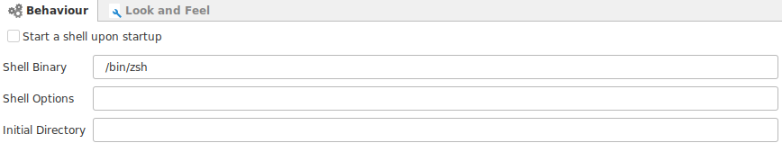
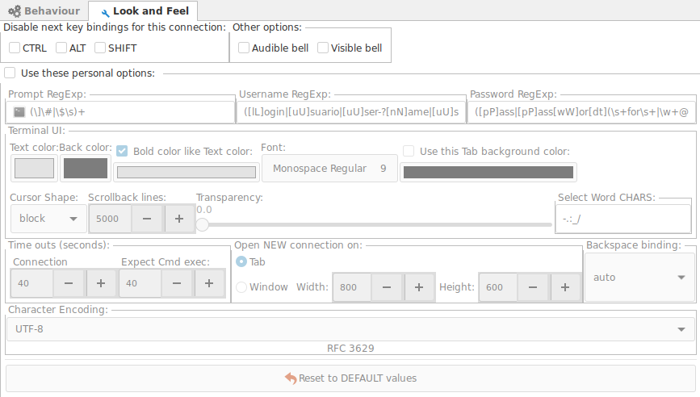

Behaviour

- Start a shell on start up : Will open a local shell terminal when Ásbrú starts.
- Shell Binary : Path to your preferred shell (bash, zsh, fish)
- Shell options : any additional options to start your shell
- Initial Directory : Path to your initial directory
Look & Feel

This Section holds terminal configurations specific for local shell terminals.
Activating this option will overwrite the Global Options.